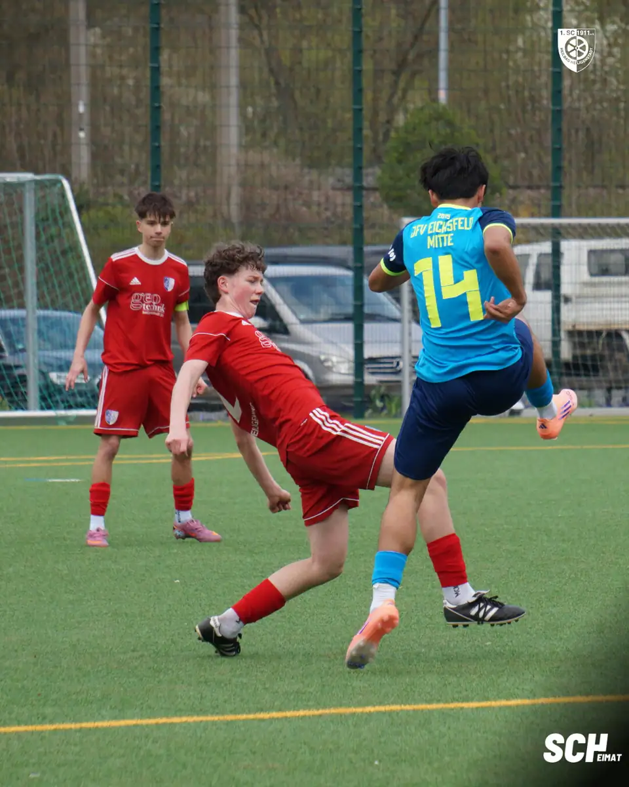
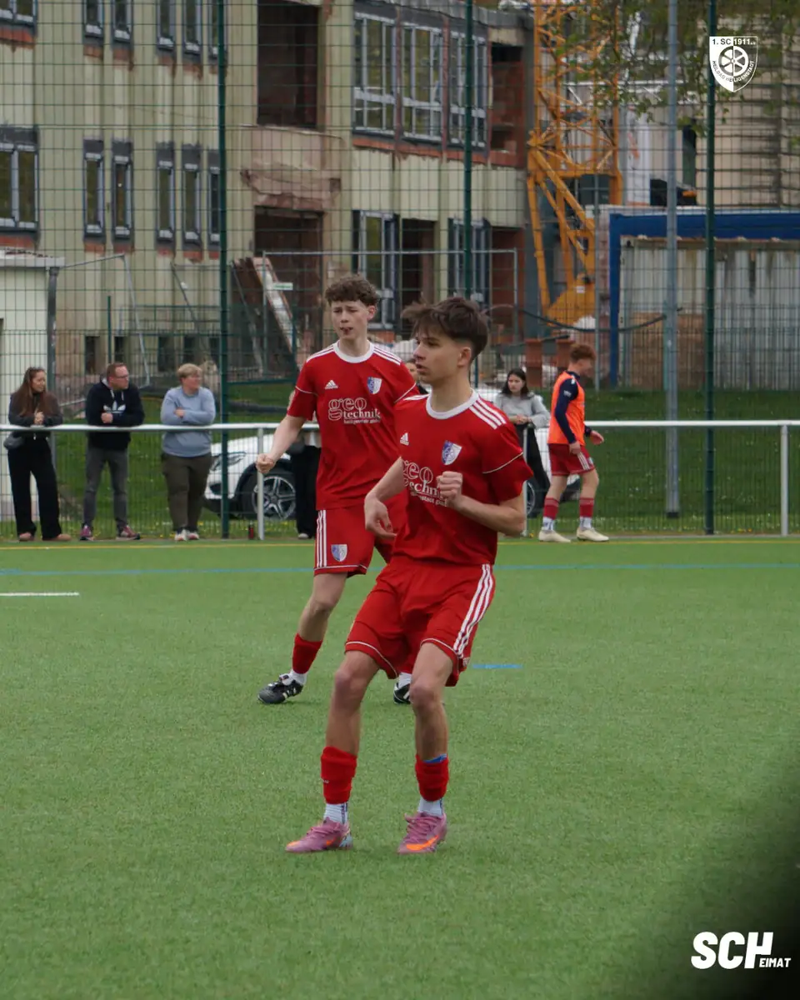
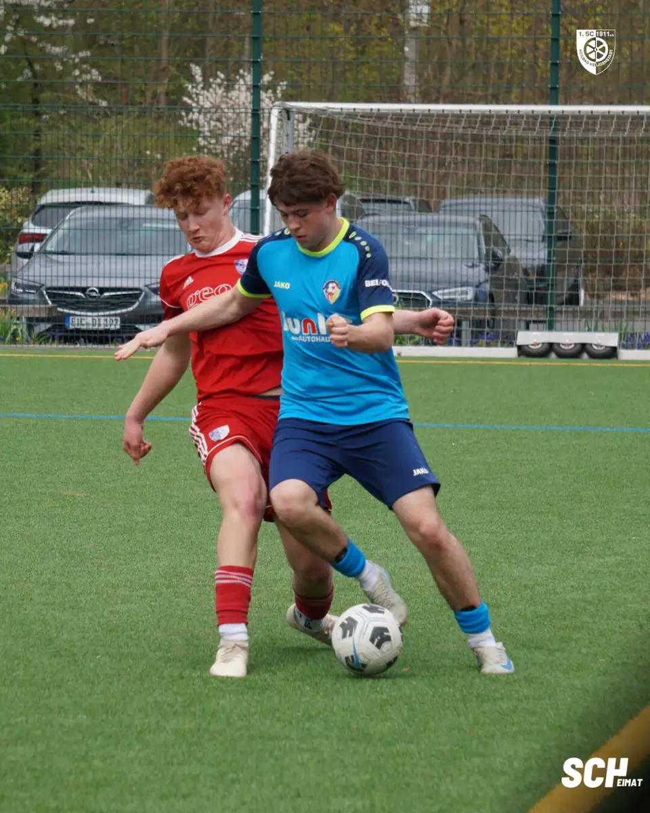
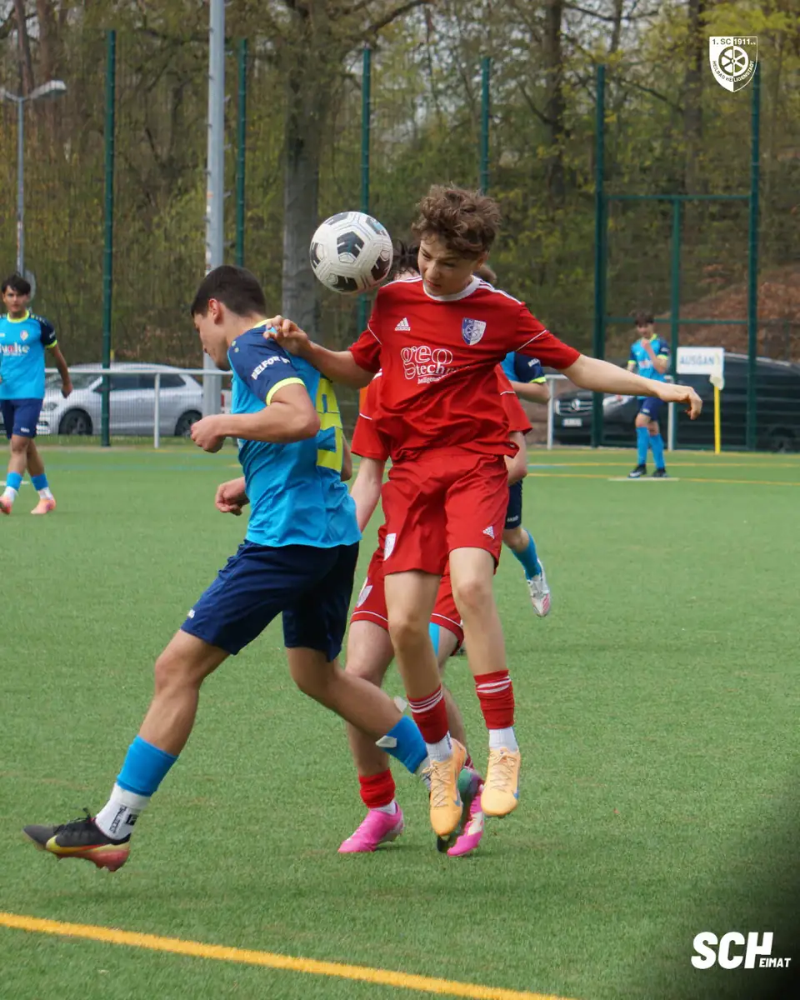
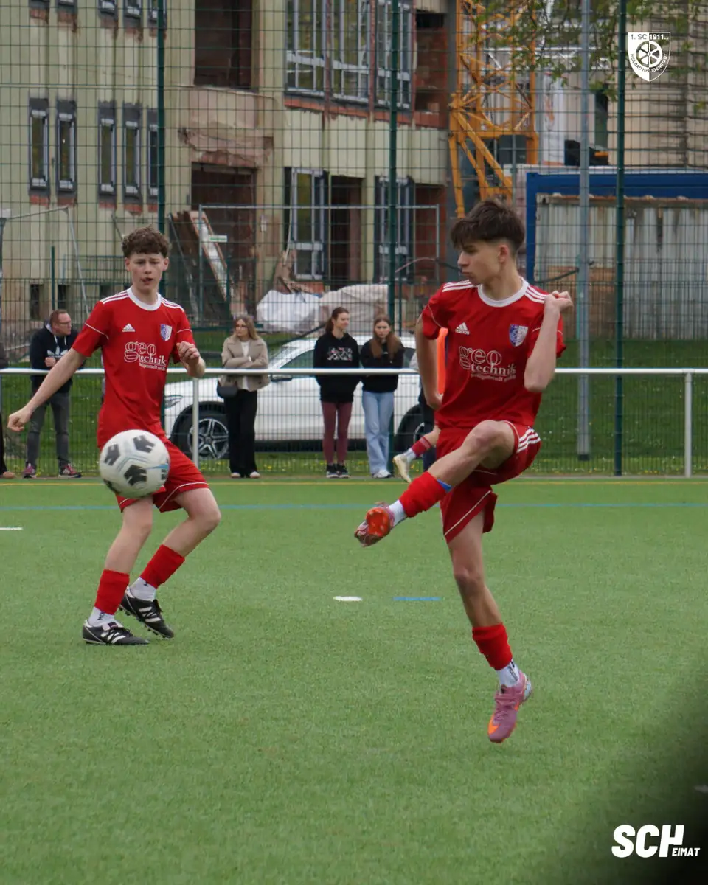
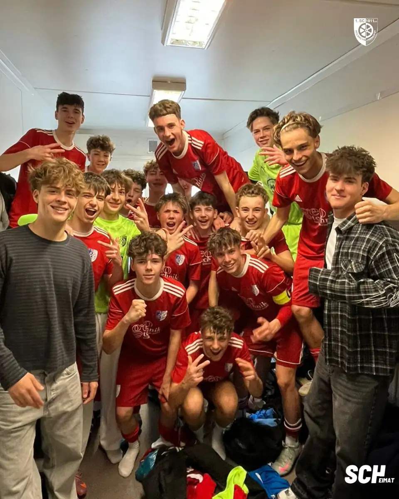

Derbysieg mit Ausrufezeichen – U17 lässt keine Zweifel aufkommen
Was für ein Auftakt in dieses Derby: Unsere B-Junioren waren von der ersten Minute an hellwach und setzten sofort ein klares Zeichen. Bereits in der 3. Minute brachte Peter Voigtsberger unsere Farben in Führung – und nur wenige Minuten später legte er direkt nach (11.). Ein Doppelschlag, der dem Spiel früh die Richtung gab und dem Team die nötige Sicherheit verlieh.
Kurze Schwäche – starke Antwort
In der 21. Minute nutzten die Gäste vom JFV Eichsfeld Mitte eine kurze Unaufmerksamkeit und verkürzten per Elfmeter auf 2:1. Doch wer dachte, dass das Spiel dadurch kippen könnte, wurde eines Besseren belehrt. Die Hartmann/Seipel-Elf blieb ruhig, konzentriert und vor allem offensiv brandgefährlich.
Offensivfeuerwerk vor der Pause
Mit einer beeindruckenden Offensivleistung drehte die Mannschaft noch vor der Halbzeit richtig auf. Peter Voigtsberger schnürte seinen nächsten Doppelpack und traf zum 3:1 (37.) sowie zum 6:1 (40.+3). Dazwischen sorgten Josef Kränzel (39.) und Moritz Nolte (40.+2) für weitere Treffer. Innerhalb weniger Minuten wurde aus einem engen Spiel ein klarer Spielstand – zur Pause stand ein deutliches 6:1.
Auch nach der Pause klar tonangebend
Auch im zweiten Durchgang ließ unsere Mannschaft nichts anbrennen. Mit viel Spielfreude, klaren Aktionen und der nötigen Konsequenz vor dem Tor blieb man das dominierende Team auf dem Platz. Josef Kränzel erhöhte in der 60. Minute auf 7:1, ehe Oskar Kruse nur drei Minuten später den 8:1-Endstand markierte.
Starke Teamleistung im Derby
Am Ende steht ein hochverdienter und nie gefährdeter Derbysieg, der vor allem durch eine geschlossene Mannschaftsleistung und enorme Offensivstärke geprägt war. Unsere B-Junioren haben eindrucksvoll gezeigt, was in ihnen steckt – und das im Derby.
Spieldaten
1. SC 1911 Heiligenstadt U17 – JFV Eichsfeld Mitte 8:1 (6:1)
SC Heiligenstadt
Biedermann (61. Hauschild) – Meier (41. Caushaj)- Kränzel – Drange – Hartwig – Nolte (54. Kruse) – Voitsberger – Mecke – Fromm – Rotter (Baumgarten) – Hentrich
JFV Eichsfeld Mitte
Ghulami – Böning (65. Amiri) – Sellin – Stollberg – Starke (57. Starke) – Hoffmann (54. Haase) – Otto (57. Hansen) – Riethig – Kleiner (Kahl) – Silfani – Waldhelm (41. Veseli)
Schiedsrichter
Ludolph
Tore:
1:0 Voigtsberger (3.), 2:0 Voigtsberger (11.), 2:1 Voigtsberger (39.), 4:1 Kränzel (40.+1.), 5:1 Nolte (40.+2.), 6:1 Voigtsberger (40.+3.), 7:1 Kränzel (60.), 8:1 Kruse (62.)





